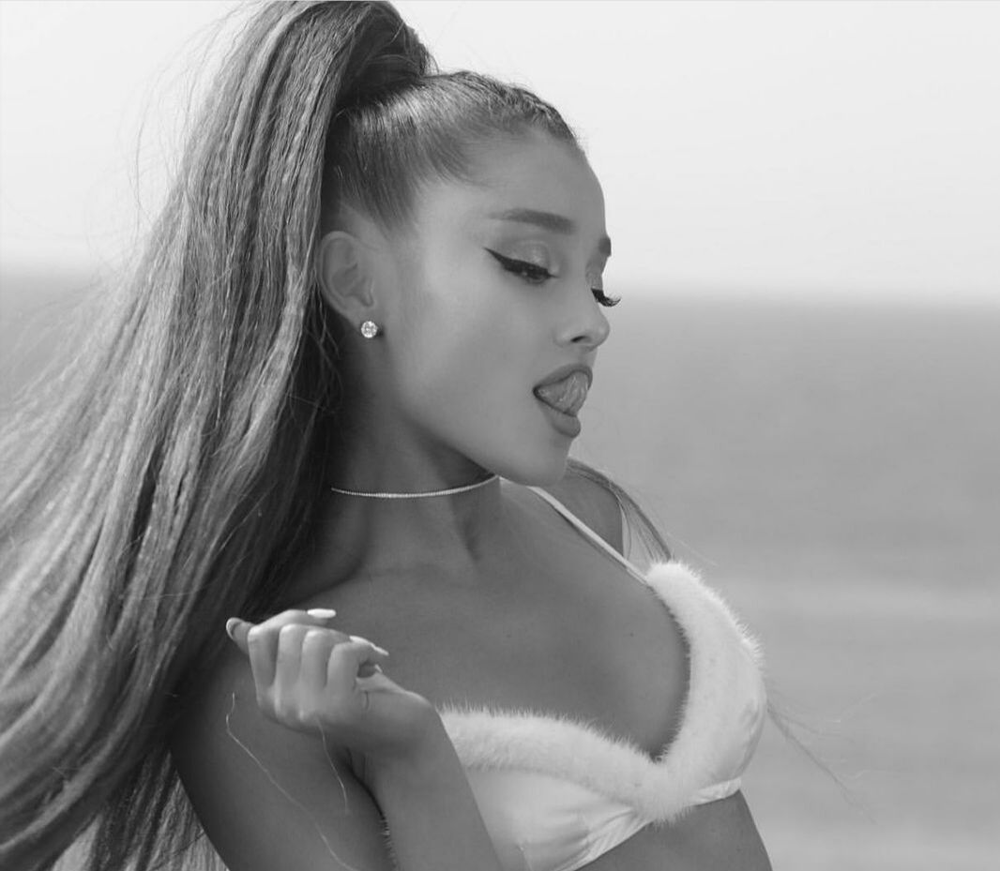
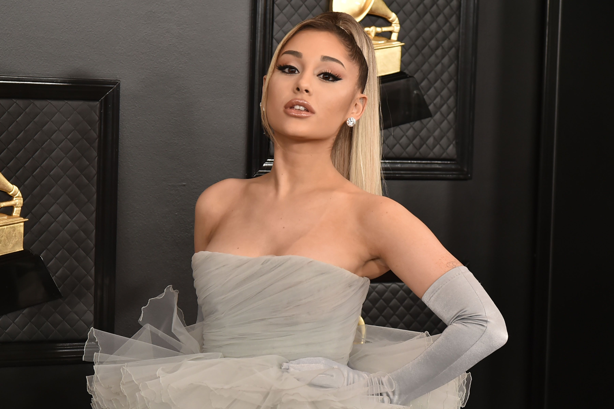
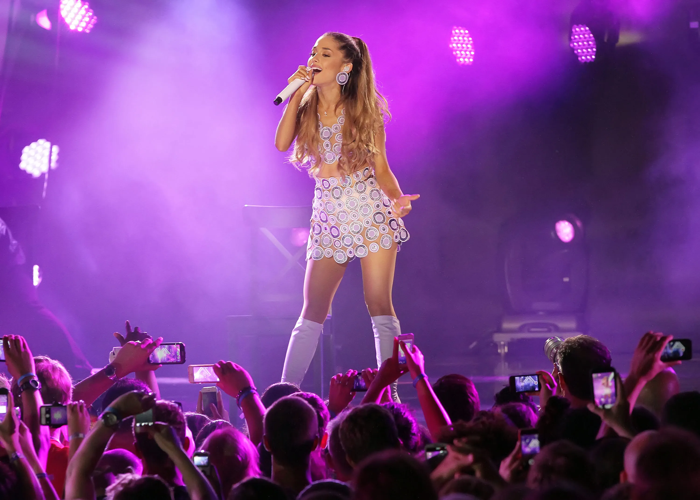
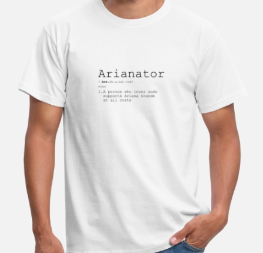
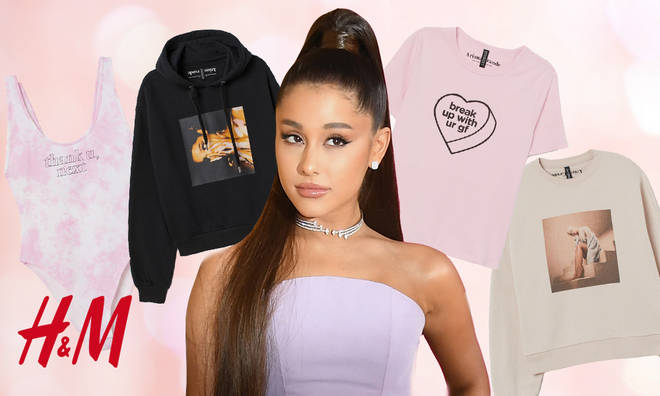

Ariana Grande
Wie?
Ariana Grande-Butera (Boca Raton, 26 juni 1993), is een Amerikaans zangeres en actrice. Als actrice kreeg Grande voornamelijk bekendheid door haar rol als Cat Valentine in de serie Victorious en de latere spin-off daarvan, Sam & Cat. Sinds 2013 is ze voornamelijk bekend als zangeres.
Grande bracht in 2013 haar debuutalbum Yours Truly uit. Hiervan is de single "The Way" met Mac Miller vooral in de Verenigde Staten een grote hit geworden: het haalde de top 10 daar.
In 2014 kwam haar tweede album My Everything uit, dat veel succesvoller werd dan haar vorige album. Ze brak internationaal als zangeres door met het nummer "Problem", in samenwerking met de Australische rapster Iggy Azalea. Het nummer werd een groot succes en bereikte de top 10 in veel landen. Het werd een van de meest succesvolle nummers van 2014. Hierna kwam "Break Free" uit, in samenwerking met Zedd. Dit werd opnieuw een succes voor Grande. Het nummer haalde de top 10 in veel landen. In Nederland haalde dit nummer zelfs de top 5. "Bang Bang" met Jessie J en Nicki Minaj kwam als derde single uit van My Everything, al is het nummer officieel van Jessie J. Dit werd opnieuw een succes. "Love Me Harder" met The Weeknd kwam als vierde single en werd Grandes vierde top 10-hit. "One Last Time" kwam als laatste single uit en scoorde hiermee haar vijfde top 10-hit. Ook in Amerika scoorden de nummers succes. Ze is na Adele de tweede vrouwelijke artiest in de geschiedenis die als voornaamste uitvoerende met drie nummers ("Problem", "Break Free" en "Bang Bang") in de top 10 van de officiële Amerikaanse hitlijst tegelijkertijd heeft gestaan. Ter promotie van dit album ging ze met de Honeymoon Tour op tournee. In 2015 bracht Grande het nummer "Focus" uit, dat opnieuw de top 10 bereikte in veel landen. Het kwam echter niet op een album te staan, ondanks het grote succes.
In 2016 kwam het 3de album Dangerous Woman uit, waar de succesvolle singles "Dangerous Woman", "Into You" en "Side to Side" met Nicki Minaj op staan. Verrassend genoeg werd "Side to Side" in veel landen de grootste hit van het album. Zo kwam het nummer in de Verenigde Staten op de vierde plaats terecht en is het met vier keer platina bekroond daar. In 2017 bracht ze ook nog van het album het nummer "Everyday" uit, in samenwerking met de Amerikaanse rapper Future. Daarnaast heeft ze met nog meer artiesten samengewerkt, zoals Andrea Bocelli, Big Sean, Nathan Sykes, Stevie Wonder en Cashmere Cat.
In 2018 kwam Ariana Grande met haar vierde album, Sweetener. Met hits als "No Tears Left to Cry", "God Is a Woman" en "Breathin" werd ook dit album een groot succes.
Eind 2018 kwam al de eerste single van haar vijfde studioalbum, de titeltrack "Thank U, Next". Thank U, Next kwam uit op 8 februari 2019. Voor het album werden de singles "Thank U, Next", promotiesingle "Imagine", "7 Rings" en "Break Up with Your Girlfriend, I'm Bored" uitgebracht. Die laatste werd gereleast samen met het album. Thank U, Next werd zeer goed ontvangen en kwam op 1 binnen in de Billboard 200. Op 19 februari 2019 bezette ze met de nummers "7 Rings", "Break Up with Your Girlfriend, I'm Bored" en "Thank U, Next" respectievelijk de eerste, tweede en derde plaats in de Billboard Hot 100. Ze ging hiermee The Beatles achterna en is de eerste solo artiest in de geschiedenis die dit heeft gedaan.
Grande is populair op social media; ze is de op vier na meest gevolgde persoon op Instagram, met meer dan 250 miljoen volgers. Na Kylie Jenner is ze de meest gevolgde vrouw. Op YouTube heeft ze in november van 2021 net geen 50 miljoen abonnees, waarmee ze behoort tot de dertig meest geabonneerde kanalen op YouTube. Haar YouTube-video's zijn in totaal al meer dan 16 miljard keer bekeken. Op Twitter heeft Grande ruim 76 miljoen volgers, waarmee ze tot de twintig meest gevolgde Twitteraars behoort. In 2018 werd Ariana tot Billboard Woman of the Year verkozen.
In oktober 2020 kwam Grande met haar zesde album Positions; de titeltrack, ook Positions, kwam uit op 23 oktober, haar volledige album kwam uit op 30 oktober.
Tours
Grande's first world tour, The Honeymoon Tour (2015) promoted her second studio album, My Everything. The 88 show tour visited North America, Europe, Asia, and Latin America. The tour grossed $41.8 million, with a total attendance of 808,667. Grande's Dangerous Woman Tour, from February 2017 to September 2017, visited North America, Europe, Latin America, Asia and Oceania. In December 2017, several media sources reported that the tour had grossed over $71 million. On 22 May 2017, a terrorist attack occurred at Grande's concert at the Manchester Arena in the United Kingdom, now known as the Manchester Arena bombing. In response, Grande performed a benefit concert named One Love Manchester. On 8 August 2018, Grande announced The Sweetener Sessions, a promotional tour for her fourth studio album, Sweetener (2018). The concert series had three stops in North America and a fourth one in London. Later that month, Grande announced on Good Morning America that the Sweetener tour was scheduled to begin in February 2019. However, Grande postponed the tour due to severe "illness". In October 2018, Grande announced her fourth concert tour, the Sweetener World Tour, in support of both her fourth studio album, Sweetener (2018), and her upcoming fifth studio album, Thank U, Next (2019). It commenced in March 2019.
Merch
This shirt is a shirt for men wich is sold at €22,99 on here
She also did a colab with h&m wich is clothes for woman all the clothes u can find here